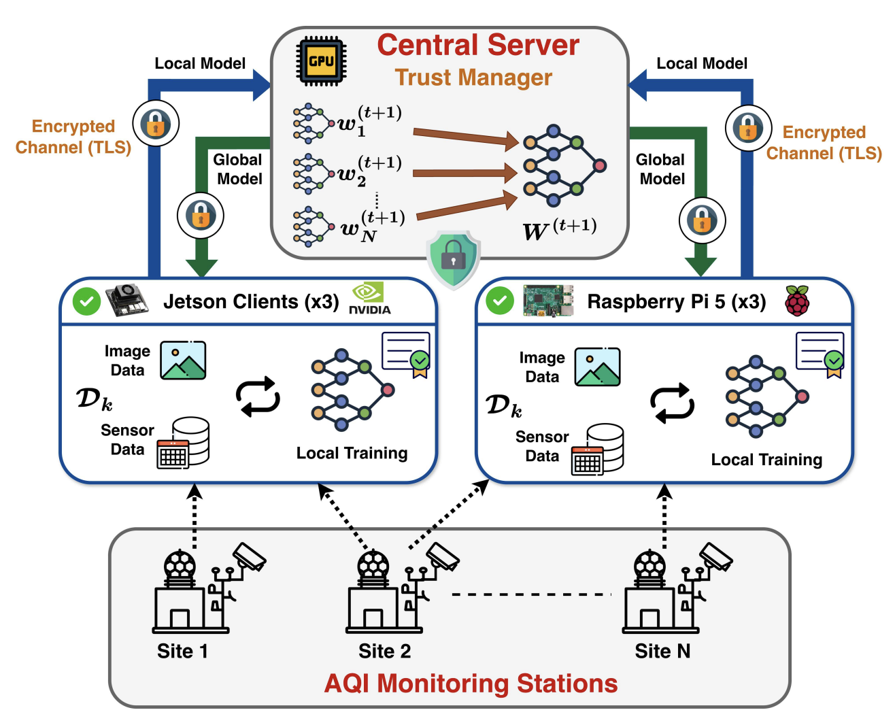
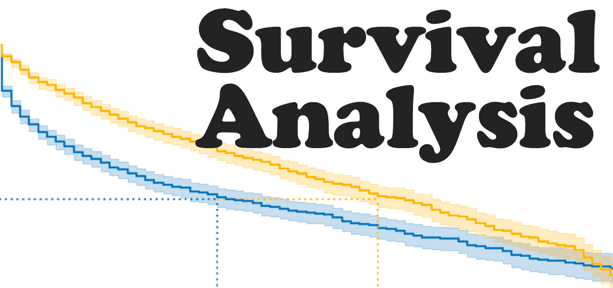

{kind=link}
Research Intern - DREAM:Lab, Indian Institute of Science (Bengaluru)
Feb 2025 - Present
Advisor:
Prof. Yogesh Simmhan
Research Area: Federated Learning and Edge Accelerators
Manjil Nepal | मन्जिल नेपाल
Senior Computer Science Student @
SRM University-AP, India.
Current Research Intern @
DREAM:Lab, Indian Institute of Science



Accurate air quality prediction is essential for public health, environmental monitoring, and industrial safety. However, most existing approaches rely on centralized learning paradigms, which introduce challenges related to scalability, privacy preservation, and communication overhead in distributed Internet of Things (IoT) environments. Moreover, current federated learning (FL) based solutions predominantly utilize unimodal data, limiting their capability to capture complex environmental patterns. To address these limitations, we propose M2FedAQI, a lightweight multimodal federated framework for decentralized Air Quality Index (AQI) prediction across heterogeneous edge devices. The proposed framework integrates visual and tabular modalities through a feature modulation based fusion mechanism that enables efficient cross-modal interaction while maintaining low computational overhead. M2FedAQI is evaluated on two benchmark datasets, PM25Vision and TRAQID, for both classification and regression tasks under centralized and federated settings. Experimental results demonstrate that M2FedAQI consistently outperforms existing approaches, achieving improvements of up to 11.0% in Accuracy, 3.53% in AUC, 12.2% in F1-score, and 18.0% in R2, while reducing MAE and RMSE by up to 25.4% and 20.4%, respectively, compared with the strongest baselines. Furthermore, deployment on heterogeneous edge devices demonstrates efficient resource utilization in terms of communication overhead, memory footprint, and computational cost. To enhance communication security, TLS-based authentication is incorporated to ensure secure client participation and protect the FL communication channel from unauthorized third-party access without modifying the underlying FL protocol.

In the modern financial system, combating money laundering is a critical challenge complicated by data privacy concerns and increasingly complex fraud transaction patterns. Although federated learning (FL) is a promising problem-solving approach as it allows institutions to train their models without sharing their data, it has the drawback of being prone to privacy leakage, specifically in tabular data forms like financial data. To address this, we propose DPxFin, a novel federated framework that integrates reputation-guided adaptive differential privacy. Our approach computes client reputation by evaluating the alignment between locally trained models and the global model. Based on this reputation, we dynamically assign differential privacy noise to client updates, enhancing privacy while maintaining overall model utility. Clients with higher reputations receive lower noise to amplify their trustworthy contributions, while low-reputation clients are allocated stronger noise to mitigate risk. We validate DPxFin on the Anti-Money Laundering (AML) dataset under both IID and non-IID settings using Multi Layer Perceptron (MLP). Experimental analysis established that our approach has a more desirable trade-off between accuracy and privacy than those of traditional FL and fixed-noise Differential Privacy (DP) baselines, where performance improvements were consistent, even though on a modest scale. Moreover, DPxFin does withstand tabular data leakage attacks, proving its effectiveness under real-world financial conditions.

Developed an NLP-based sentiment analysis system to automatically classify large volumes of student feedback as positive, neutral, or negative for educational quality assessment. Applied text preprocessing and count vectorization, and trained Naive Bayes, KNN, and more. Enabled institutions to extract actionable insights from unstructured feedback, supporting data-driven improvements in instruction and curriculum.

The challenge centers on time-to-event prediction, modeling how long it takes from an initial event (e.g., loan issuance) to an outcome (such as repayment or liquidation). Models are evaluated using the Concordance Index (C-index), where 0.5 indicates random performance and 1.0 represents perfect ranking. We secured 3rd place with a C-index of 0.8472.